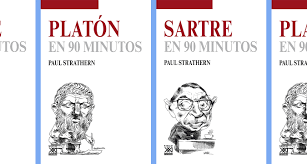
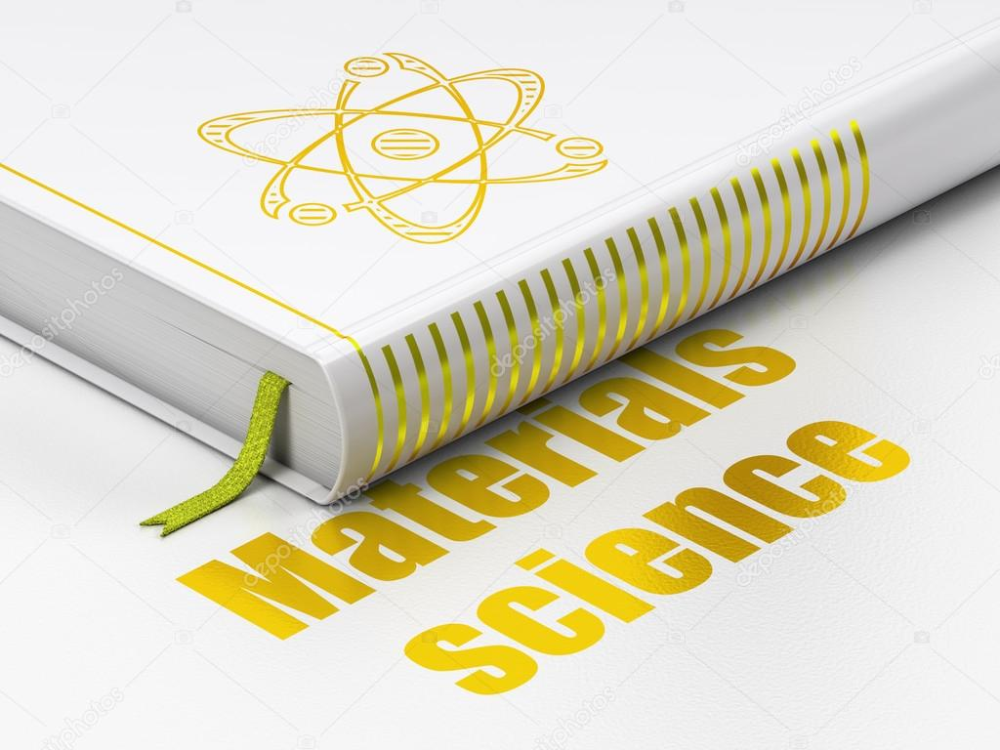
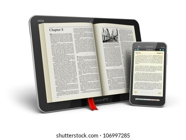

Esta pagina consta de una explicacion detallada a la informacion online que se maneja en nuestra biblioteca, en cada subpagina encontrada en el menu podran visualizar los libros mas caracteristicos en cada una de estas categorias, por ultimo en la parte de "servicos"se desplegara informacion acerca de las comodidades que este lugar ofrece... Anexamos link de la pagina de la biblioteca LA CENTRAL
| # | Categorias | Imagen | Descripcion |
|---|---|---|---|
| 1 | Filosoficos |  | La filosofía aporta herramientas de pensamiento crítico que ayudan a cuestionar la tradición y la autoridad. ... Es el esfuerzo por pensar, pensar mejor para vivir mejor. |
| 2 | Ciencia |  | Estos libros suponen una fuente importante de referencias primarias en los diversos campos de la investigación científica y proporcionan información básica para el estudio de sus desarrollos históricos |
| 3 | Tecnologicos |  | Los libros electrónicos se pueden leer en dispositivos dedicados de lectura electrónica, pero también en cualquier dispositivo de computadora que tenga una pantalla de visualización controlable, incluyendo computadoras de escritorio, ordenadores portátiles, lector de libros electrónicos y teléfonos inteligentes. |
En la opcion de menu encontramos un parte de "SERVICIOS" donde ahi se mostrara los planes que tenemos ofertados para el momento de tenerte con nosotros... Visitalos y enterate de lo que tenemos para ti.
--------------------------------SU UBICACION---------------------------------
-------------------------ESTRUCTURACION EN VIDEO---------------------------